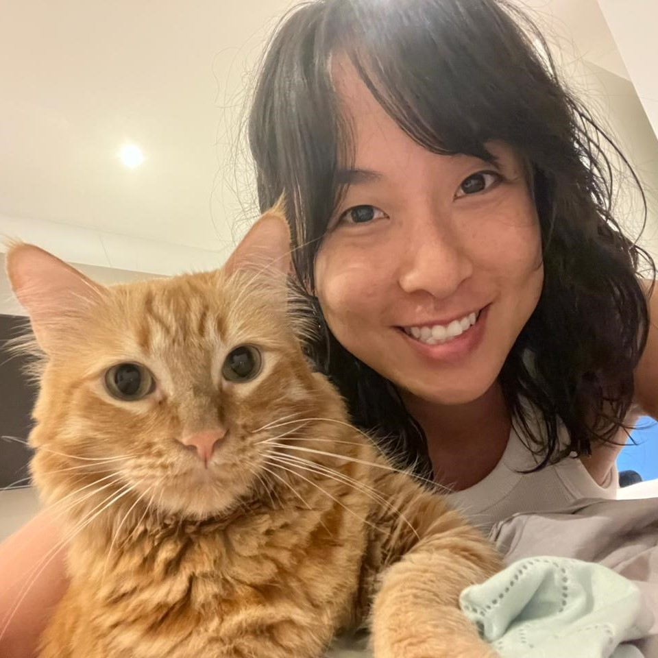
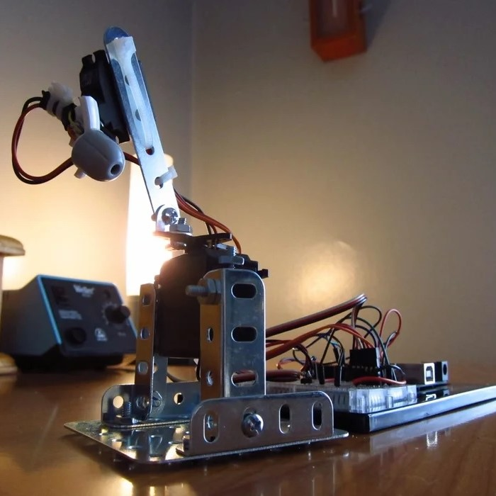
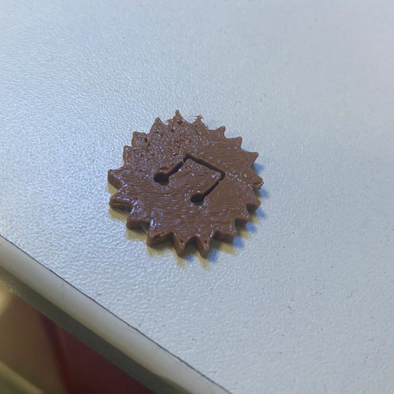

|  |
Sobre miSoy Mariana Shimohira, tengo 33 años y estoy cursando el último año de Arquitectura de Interiores en Toulouse Lautrec. Siempre me ha interesado poder dar soluciones prácticas y funcionales a los espacios manteniendo la estética y armonía. En mi tiempo libre me gusta ver series, jugar con mis gatos o juntarme con amigos. |
|  |
Proyecto Lab2Para el proyecto final de Laboratorio 2 me gustaría realizar algún juguete para mascotas como un láser para gatos utilizando Arduino y un sensor de proximidad, tal vez con un diseño exterior agradable impreso en 3d. |
|  |
Misión 1Durante la misión 1 trabajamos en grupo y encontramos que a todos en el grupo nos gustaba el verano, la playa y la música. Hicimos un dibujo que fusionaba todos estos gustos y luego lo simplificamos para poder imprimirlo. Terminamos con una nota musical dentro de un sol. |